В этом уроке мы коснёмся тех моментов, о которых не упоминали при изучении дробей, посчитав что на первых порах они создают трудности для обучения.
Правильные и неправильные дроби
В самом начале своего пути при изучении дробей мы узнали, что правильная дробь — это та дробь, у которой числитель меньше знаменателя.
В школьной литературе можно встретить другое определение правильной дроби. Выглядит оно следующим образом:
Правильная дробь всегда меньше единицы.
Как понять данное определение? Дробь сама по себе указывает на то, что какой-либо объект разделен на несколько частей. И это всегда один единственный объект. Под единицей именно это и подразумевается.
Например, пусть у нас имеется одна пицца:
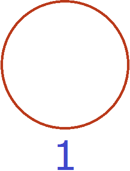
В данном случае она и является единицей.
Если мы отрежем от этой пиццы половину, то есть  (одну вторую пиццы), то наш кусок будет меньше, чем вся целая пицца:
(одну вторую пиццы), то наш кусок будет меньше, чем вся целая пицца:
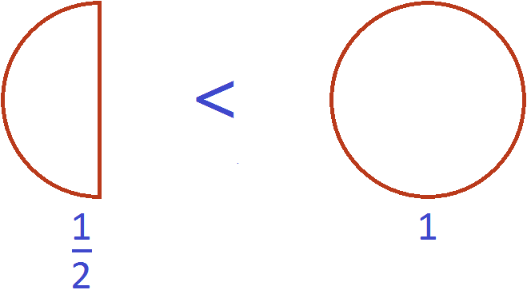
В этом и заключается суть фразы «правильная дробь всегда меньше единицы».
Наша половинка пиццы является дробью  и она меньше одной целой пиццы, то есть меньше единицы:
и она меньше одной целой пиццы, то есть меньше единицы:
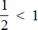
Это выражение можно доказать. Если мы вычислим дробь  , то получим десятичную дробь 0,5. А это рациональное число меньше единицы:
, то получим десятичную дробь 0,5. А это рациональное число меньше единицы:
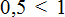
На координатной прямой можно увидеть, как располагаются эти числа:
Видно, что рациональное число 0,5 располагается левее, чем 1. А мы помним, что чем левее число располагается на координатной прямой, тем оно меньше.
С неправильными дробями всё было наоборот. Неправильной дробью мы назвали ту дробь, у которой числитель больше знаменателя.
Но в школьной литературе можно встретить другое определение неправильной дроби. Выглядит оно следующим образом:
Неправильная дробь всегда больше единицы или равна ей.
Например, рассмотрим неправильную дробь  . Выделим в этой дроби целую часть, получим
. Выделим в этой дроби целую часть, получим  . Изобразим эту смешанную дробь в виде одной целой пиццы и ещё половинки пиццы:
. Изобразим эту смешанную дробь в виде одной целой пиццы и ещё половинки пиццы:
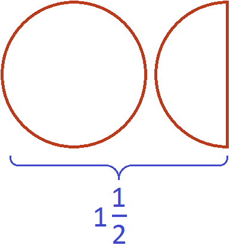
Вместе одна целая пицца и ещё половина пиццы больше, чем просто одна целая пицца
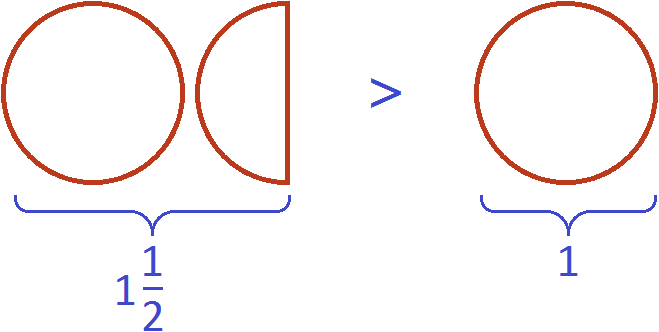
В этом и заключается суть фразы «неправильная дробь всегда больше единицы».
Одна целая пицца и ещё половина пиццы описывается смешанной дробью  и эта смешанная дробь больше единицы:
и эта смешанная дробь больше единицы:
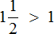
Переведём смешанную дробь  обратно в неправильную дробь, чтобы не противоречить правилу. Ведь речь в данном случае идёт о неправильных дробях:
обратно в неправильную дробь, чтобы не противоречить правилу. Ведь речь в данном случае идёт о неправильных дробях:
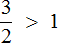
что схематически будет выглядеть так:
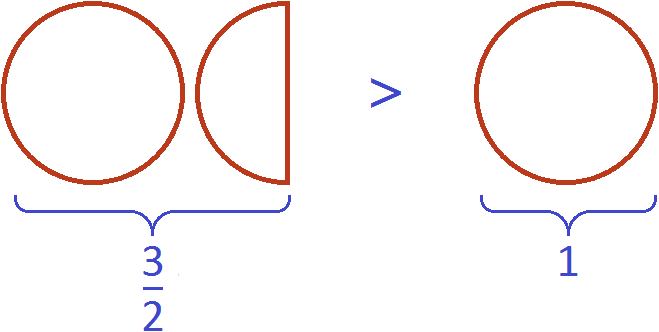
Выражение можно доказать. Если мы вычислим дробь  , то получим десятичную дробь 1,5. А это рациональное число больше единицы:
, то получим десятичную дробь 1,5. А это рациональное число больше единицы:
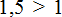
На координатной прямой можно увидеть, как располагаются эти числа:
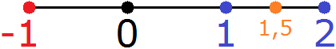
Видно, что рациональное число 1,5 располагается правее, чем 1. А мы помним, что чем правее число располагается на координатной прямой, тем оно больше.
Неправильной также называется дробь равная единице. Речь в данном случае идет о тех дробях, у которых числитель и знаменатель равны.
Рассмотрим дробь . Изобразим её в виде двух одинаковых кусочков пиццы:
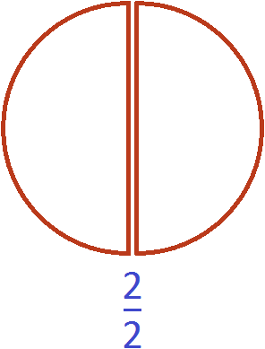
Фактически речь идёт не о дроби, а об одной целой пицце:
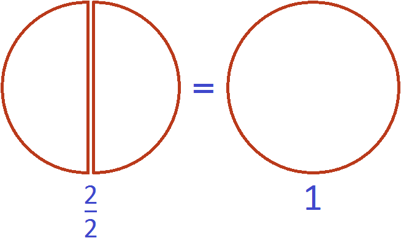
В этом и заключается суть фразы «неправильная дробь может равняться единице».
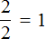
Любое целое число отличное от нуля (не равное нулю) можно представить в виде неправильной дроби со знаменателем 1. Например, числа 3, 5, 9, 12 можно представить в виде неправильных дробей со знаменателем 1
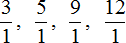
Представление объекта в виде единицы позволяет проще решать задачи. Рассмотрим примеры.
Пример 1. Куплен один шоколадный батончик. От него отрезали треть. Сколько батончика осталось?
Осталось две трети батончика. Сам батончик можно описать цифрой 1, далее из этой единицы вычесть треть:
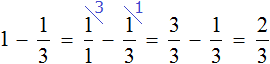
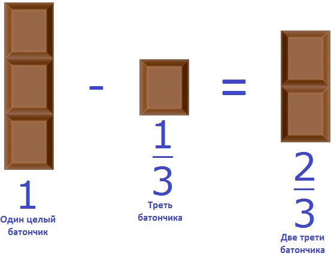
Не приводя на бумаге никаких вычислений, можно ответить на вопрос подобной задачи. Сказано «отрезали треть» — значит сразу нужно обратить внимание на то, что знаменатель равен 3.
Если отрезали одну часть из трёх, то сколько частей должно остаться? Верно, две части. Поэтому и ответ «две части из трёх» или «две трети».
Пример 2. Куплен один пирог. От него отрезали две шестых. Сколько пирога осталось?
Осталось четыре шестых пирога. Сам пирог можно описать цифрой 1, далее из этой единицы вычесть две шестых:
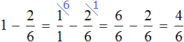
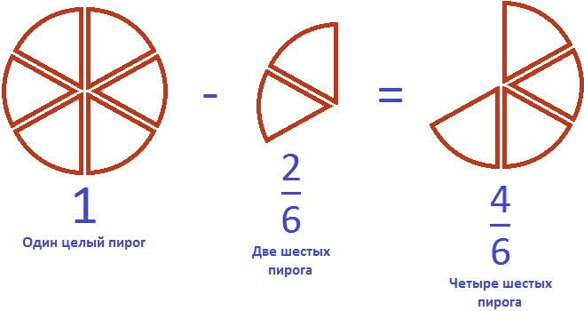
Приведение дробей к общему знаменателю
Чтобы привести дроби к общему знаменателю, мы находили НОК (наименьшее общее кратное) знаменателей этих дробей. Затем делили найденный НОК на знаменатель первой дроби и получали дополнительный множитель для первой дроби.
То же самое мы делали и для второй дроби — делили НОК на знаменатель второй дроби и получали дополнительный множитель для второй дроби.
Затем дроби умножались на свои дополнительные множители. В результате они обращались в дроби, у которых одинаковые знаменатели. К примеру, выражение
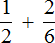
вычисляется следующим образом: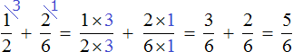
Но есть и другой способ приведения дробей к общему знаменателю. Этим способом часто пользуются школьники и ленивые студенты. Суть этого способа заключается в том, что роль дополнительных множителей берут на себя знаменатели обеих дробей, причем происходит это «крест-накрест» — знаменатель первой дроби становится дополнительным множителем второй дроби, а знаменатель второй дроби становится дополнительным множителем первой дроби.
Вычислим предыдущее выражение этим способом. Знаменатель первой дроби 2 становится дополнительным множителем второй дроби, а знаменатель второй дроби 6 становится дополнительным множителем первой дроби:
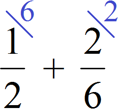
Далее числитель и знаменатель каждой дроби умножаем на свой дополнительный множитель и вычисляем:
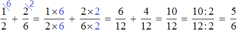
Преимущество данного способа в том, что не нужно находить НОК знаменателей обеих дробей. В процессе вычисления всё выравнивается само. Единственный недостаток заключается в том, что выражение становится более длинным и корявым.
Сравните выражения, которые мы вычислили сначала первым способом, а затем вторым:
Выражение, вычисленное первым способом, намного аккуратнее и короче, нежели второе.
Вторым способом мы будем пользоваться при изучении алгебры. В алгебре работать с буквенными выражениями приходиться чаще, чем с числовыми.
К примеру, если перед нами будет стоять задача привести буквенное выражение
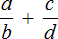
к общему знаменателю, то у нас не будет другого выхода, кроме как воспользоваться методом «крест-накрест», то есть использовать второй способ, который мы сейчас рассмотрели: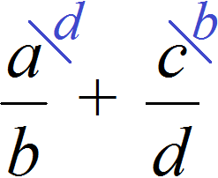
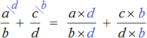
Нахождение дроби от числа
Чтобы найти дробь от числа, мы делим это число на знаменатель искомой дроби и полученный результат умножаем на числитель искомой дроби.
Например, чтобы найти  от 10 сантиметров, нужно 10 разделить на 5, и полученный результат умножить на 2
от 10 сантиметров, нужно 10 разделить на 5, и полученный результат умножить на 2
10 : 5 = 2
2 × 2 = 4
Получили ответ 4. Значит  от десяти сантиметров составляют 4 сантиметра. Схематически это выглядит примерно так:
от десяти сантиметров составляют 4 сантиметра. Схематически это выглядит примерно так:
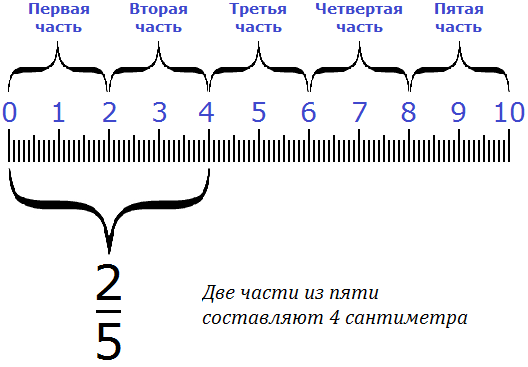
Но есть и второй вариант решения. Для нахождения  от десяти сантиметров, достаточно умножить 10 на
от десяти сантиметров, достаточно умножить 10 на  . Тогда мы получим тот же результат, как и в прошлый раз, но получим мы его в одно действие:
. Тогда мы получим тот же результат, как и в прошлый раз, но получим мы его в одно действие:
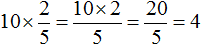
Поэтому можно взять на заметку следующее правило нахождения дроби от числа:
Чтобы найти дробь от числа, нужно это число умножить на искомую дробь.
Пример 2. Найти  от двух часов.
от двух часов.
Два часа это 120 минут. Чтобы найти  от 120 минут, нужно 120 умножить на дробь
от 120 минут, нужно 120 умножить на дробь 
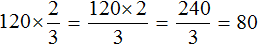
Значит  от двух часов составляют 80 минут.
от двух часов составляют 80 минут.
Нахождение числа по дроби
Чтобы найти всё число по его дроби, мы делили это число на числитель имеющейся дроби и полученный результат умножали на знаменатель имеющейся дроби.
Например, зная что  рулетки составляет 12 см, мы можем найти длину всей рулетки. Для этого 12 нужно разделить на 2, и полученный результат умножить на 3
рулетки составляет 12 см, мы можем найти длину всей рулетки. Для этого 12 нужно разделить на 2, и полученный результат умножить на 3
12 : 2 = 6
6 × 3 = 18
Получили 18. Значит длина всей рулетки равна 18 см.
Но есть и второй вариант решения. Для нахождения длины всей рулетки, достаточно 12 разделить на дробь  . Тогда мы получим тот же результат, как и в прошлый раз, но получим мы его в одно действие:
. Тогда мы получим тот же результат, как и в прошлый раз, но получим мы его в одно действие:
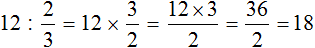
Поэтому можно взять на заметку следующее правило нахождения числа по дроби:
Чтобы найти число по дроби, нужно это число разделить на данную дробь.
Пример 2.  всего пути составляет 6 км. Найти длину всего пути.
всего пути составляет 6 км. Найти длину всего пути.
Чтобы найти длину всего пути, достаточно 6 разделить на дробь 
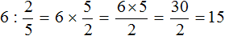
Получили ответ 15. Значит длина всего пути составляет 15 километров.
Десятичная точка в дробях
Запятую в десятичной дроби, которая отделяет целую часть от дробной, по-другому называют десятичной точкой.
Дело в том, что в некоторых источниках целая часть от дробной отделяется именно точкой, а не запятой. Например:
2.5 (две целых пять десятых)
15.65 (пятнадцать целых шестьдесят пять сотых)
Точка часто используется для записи десятичных дробей на компьютере — в программировании и при работе в математических пакетах. В остальных случаях: на письме и при подготовке документов, в десятичных дробях чаще используется запятая, а не точка.
Мы используем в десятичных дробях запятую, а не точку, поэтому разумнее называть эту запятую десятичной запятой.
Но десятичную запятую большинство людей тоже называют десятичной точкой. Что в принципе не является ошибкой, потому как речь всё равно идёт о разделителе, котором отделяет целую часть от дробной.
Давайте и мы будем называть свою запятую в десятичных дробях десятичной точкой. Это словосочетание проговаривается легче и приятнее на слух.
Десятичная точка используется для увеличения или уменьшения дроби в 10, 100, 1000 и более раз. При увеличении десятичной дроби, десятичная точка передвигается вправо, а при уменьшении — влево. Чтобы быстро запомнить это, можно воспользоваться фразами «чем правее, тем больше» и «чем левее, тем меньше».
Пример 1. Увеличить десятичную дробь 6,3 в десять раз.
Чтобы увеличить десятичную дробь 6,3 в десять раз, достаточно передвинуть десятичную точку вправо на одну цифру, получим 63.
Пример 2. Уменьшить десятичную дробь 6,3 в десять раз.
Для уменьшения дроби 6,3 в десять раз достаточно передвинуть десятичную точку влево на одну цифру, получим 0,63
На вопрос «как узнать на сколько цифр передвигать десятичную точку?», нужно смотреть во сколько увеличивается (или уменьшается) десятичная дробь. Если дробь нужно увеличить (или уменьшить) в десять раз, то десятичная точка сдвигается на одну цифру.
Если дробь нужно увеличить (или уменьшить) в сто раз, то десятичная точка сдвигается на две цифры.
Если дробь нужно увеличить (или уменьшить) в тысячу раз, то десятичная точка сдвигается на три цифры. В общем, всё зависит от количества нулей во множителе.
Например, увеличить дробь в десять раз означает умножить её на 10. Мы помним, что для того чтобы умножить десятичную дробь на 10, нужно в этой дроби передвинуть запятую вправо на одну цифру (поскольку в числе 10 один ноль). Теперь можно не заучивать подобные правила. Такое умножение можно легко выполнить, передвинув десятичную точку.
Пример 3. Увеличить десятичную дробь 6,3 в тысячу раз.
Чтобы увеличить десятичную дробь 6,3 в тысячу раз, достаточно передвинуть десятичную точку вправо на три цифры, получим 6300. Если после запятой не хватает цифр, то вместо недостающих цифр записывают нули, что мы и сделали.
Пример 4. Уменьшить десятичную дробь 12,5 в сто раз.
Для уменьшения дроби 12,5 в сто раз, достаточно передвинуть десятичную точку влево на две цифры, получим 0,125
Десятичную точку можно использовать не только в десятичных дробях. Её можно использовать для увеличения (уменьшения) и других чисел в 10, 100 или в 1000 раз.
Возьмём к примеру целое число 325 и поставим в конце точку, получим 325 с точкой. Воспользуемся в этот раз точкой, так как её легче изобразить на рисунке:
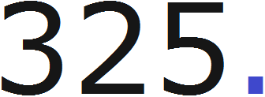
Попробуем уменьшить это число в десять раз. Для этого достаточно будет передвинуть точку влево на одну цифру, получим 32.5
Попробуем увеличить число 123 в тысячу раз. Для этого достаточно передвинуть десятичную точку на три цифры вправо, получим 123000.
Попробуем уменьшить число 123 в тысячу раз. Для этого достаточно передвинуть десятичную точку на три цифры влево, получим 0,123
Попробуем уменьшить число 65 в тысячу раз. Для этого достаточно передвинуть десятичную точку на три цифры влево, получим 0,065
Попробуем увеличить число 65 в сто раз. Для этого достаточно передвинуть десятичную точку на две цифры вправо, получим 6500.
Составные выражения
Встречаются задачи, в которых требуется вычислить выражение составленное из нескольких дробей. Например,
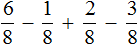
Такое выражение вычисляется согласно порядку действий. В данном случае вычисление будет выполнено последовательно слева направо:
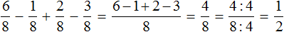
Если из
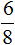
пиццы вычесть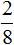
пиццы, затем вычесть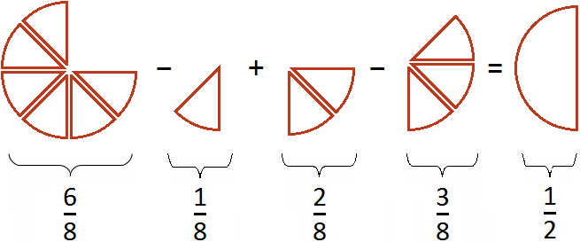
Если вам тяжело понять данный пример, попробуйте самостоятельно решить его на бумаге, делая соответствующие рисунки к каждой дроби.
Пример 2. Найти значение выражения
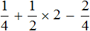
В данном примере сначала необходимо выполнить умножение затем сложение и вычитание
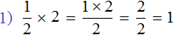
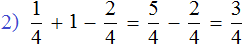
Если  пиццы увеличить в два раза, то получится одна целая пицца
пиццы увеличить в два раза, то получится одна целая пицца
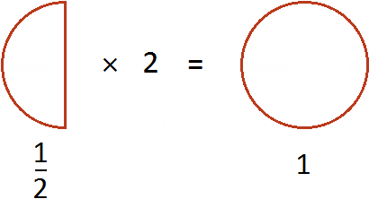
Затем если к  пиццы прибавить эту целую пиццу, а затем из полученного результата вычесть
пиццы прибавить эту целую пиццу, а затем из полученного результата вычесть  пиццы, то получится
пиццы, то получится  пиццы
пиццы
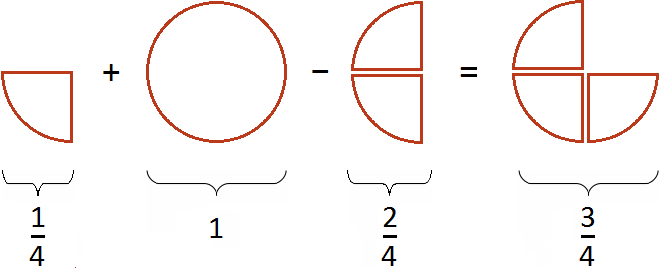
Пример 3. Найти значение выражения
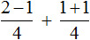
Сначала желательно вычислить выражения, находящиеся в числителях обеих дробей, а именно выражения 2−1 и 1+1,
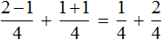
Дальнейшее вычисление не составляет особого труда  плюс
плюс  равно
равно 
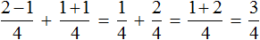
Конечно, можно было записать в одном числителе выражения, находящиеся в числителях обеих дробях. От этого ответ не изменился бы:
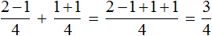
Но в некоторых случаях возможны подвохи, особенно если из одной дроби вычитается другая. Следующий пример демонстрирует это.
Пример 4. Найти значение выражения
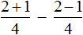
Вычислим выражения, находящиеся в числителях обеих дробей, а именно выражения 2+1 и 2−1
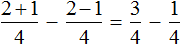
Ну и нетрудно догадаться, что
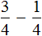
равно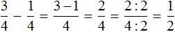
Все логично. Если из  пиццы вычесть
пиццы вычесть  пиццы, то получится
пиццы, то получится  пиццы.
пиццы.
Теперь попробуем решить данный пример, записав в одном числителе оба выражения, находящиеся в числителях обеих дробей:
Получается совсем другой ответ. Этот ответ не является правильным. Давайте посмотрим, что представляет собой выражение .
Для начала запишем его следующим образом:
Теперь попробуем проследить весь процесс вычисления этого выражения. Предположим, что имелось  пиццы
пиццы
К ней добавили еще  пиццы
пиццы
Затем из получившейся  пиццы вычитается
пиццы вычитается 
Затем из получавшейся  пиццы вычитают еще
пиццы вычитают еще  пиццы
пиццы
Получился 0, то есть пицца исчезла. Но мы знаем, что должно было остаться  пиццы. Поэтому при вычислении дробных выражений следует быть внимательным, особенно при вычитании выражений, содержащих в числителе другие выражения.
пиццы. Поэтому при вычислении дробных выражений следует быть внимательным, особенно при вычитании выражений, содержащих в числителе другие выражения.
Если хочется сэкономить время и записать в числителе оба выражения, находящиеся в числителях обеих дробей, то второй числитель нужно взять в скобки. Это спасёт от ошибки:
Пример 5. Найти выражения
Вычислим выражения, находящиеся в числителях обеих дробей:
Приведем полученные дроби к общему знаменателю и как обычно вычислим полученное выражение:
Если из  вычесть
вычесть  пиццы, то получится
пиццы, то получится  пиццы
пиццы
Пример 6. Найти значение выражения
В первую очередь необходимо выполнить умножение:
Далее выполняется сложение: